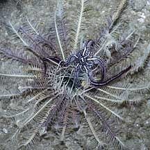
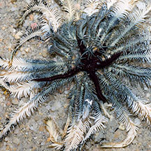
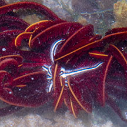
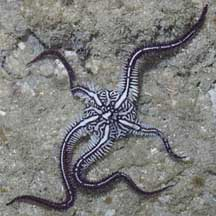
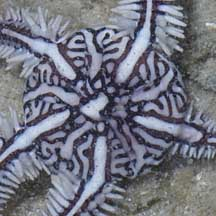
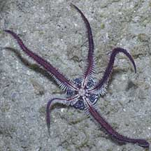

|
|
| brittle stars text index | photo index |
| Phylum Echinodermata > Class Stellaroida > Subclass Ophiuroidea |
| Feather-hitching
brittle stars Ophiomaza cacaotica* Family Ophiotrichidae updated Apr 2020 Where seen? This brittle star lives only in a feather star (Class Crinoidea). It has been seen on many different kinds of feather stars on our shores. Features: Whole animal 2-3cm wide. Five arms with flat spines on the sides. Spines on the tips of the arms are modified into hooks that help the brittle star cling to the feather star host. So far seen in a wide variety of colours and patterns, often matching the host feather star. The animal is poorly studied but it seems to do no harm to the feather star host. |
 Raffles Lighthouse, Jul 06 |
 East Coast, Jun 13 |
 Sentosa, May 12 |
|
 Upper side. |
 |
 Underside. |
| Feather-hitching brittle stars on Singapore shores |
On wildsingapore
flickr
|
| Other sightings on Singapore shores |
|
Links
References
|